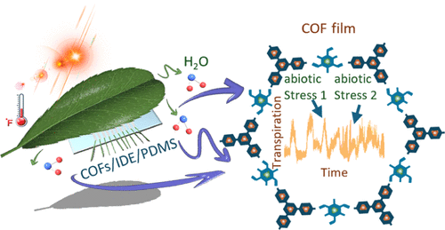

Wearable sensor based on covalent organic framework humidity film for long-term monitoring of tomato physiological under abiotic stress
Liang Huang, Xinyang He, Jimin Hu, Caixun Qin, Chenxin Huang, Yu Tang, Fenglin Zhong, Xiangzeng Kong*, Xuan Wei*
ACS Nano, 2024
Global agricultural productivity is affected by plant stresses every year; as a consequence, monitoring and preventing plant stresses is a significant measure to protect the agro-ecological environment. Similar to the adoption of wearable devices to appraise human physiological information and disease diagnosis, however, in situ nondestructive monitoring of complex and weak physiological information in plants is an enormous challenge for the development of wearable sensors. Herein, to accurately analyze the changes of tomato internal information under multiple abiotic stresses in real-time, we introduce the covalent organic framework (COF) film synthesized by self-assembly layer by layer through the oil/water interface as a sensitive material to develop a multifilm-integrated wearable sensor capable of monitoring leaf surface humidity and leaf temperature. The flexible substrate can stretch with leaf growth to ensure the accuracy of long-term monitoring. Benefiting from the performance characteristics, such as ultrahigh sensitivity (S) of 0.8399 nA/%RH and an extremely low-resolution (ΔRH) value of 0.0564%, which could amplify the conducted signal, and the long-term stability of COFMOP-TAPB, the transpiration information on tomatoes under 10 abiotic stresses can be monitored continuously and with high precision over a long period by applying the COF-based sensor on the lower surface of the leaf at the upper end of the stem morphology. Finally, we employ metaheuristic optimization algorithms to predict the time series of the internal physiological change trend of tomatoes in the future so that farmers can take corresponding preventive measures in time to ensure the healthy growth of tomatoes.